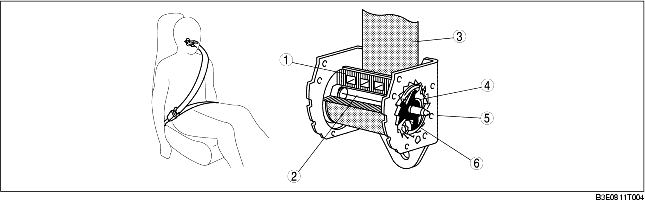
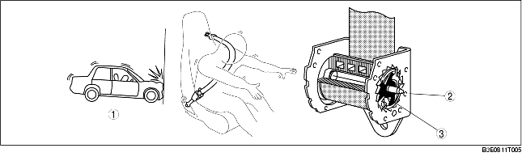
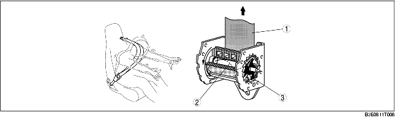

• Consists of a shaft, torsion bar, tread head, pawl, belt, and frame.
• The retractor has a built-in load limiter mechanism that reduces the restriction of the belt against the occupant when the belt locks and the force applied to the belt exceeds a preset level.
1. Initial state

.
2. ELR operation
When a force of deceleration exceeding 0.45 G is applied to the belt, the pawl moves and engages with the ridge of the frame. As a result, the belt is locked because the movement of the belt is limited by the pawl, and the initial stage of occupant restraint takes place.

.
3. Load limiter operation
If the pawl operates and a significant force that could cause further injury to the chest area is applied to the belt, the torsion bar twists and extracts only the amount of belt necessary to absorb the force against the chest.

.